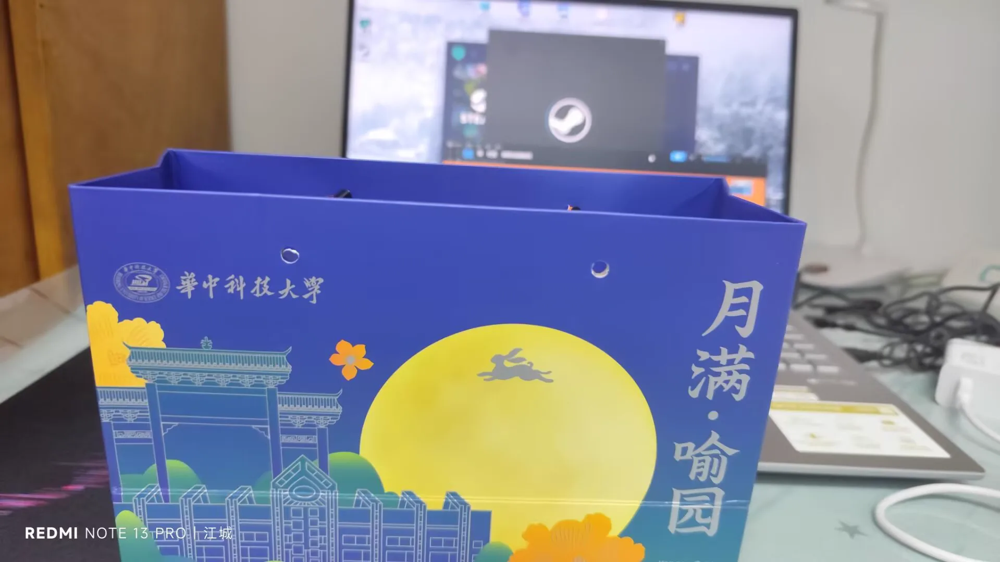

Journal · 2024-09-12
湖北省武汉市
从今若许闲乘月， 拄杖无时夜叩门。
If from now on I may roam at leisure in the moonlight, I'll lean on my cane and come knocking at your gate some night.
S'il m'est permis désormais de flâner au clair de lune, je m'appuierai sur mon bâton et viendrai frapper à ta porte, un soir ou l'autre.
Wenn ich künftig nur müßig im Mondschein wandeln darf, werde ich, auf meinen Stock gestützt, eines Nachts an deine Tür klopfen.
噗叽红柿 : 程老师为啥长变了 2024年9月12日 20:33 柴江赣北 回复噗叽红柿 : 这真是原图，程老师拍的 2024年9月12日 20:37 张悦 回复噗叽红柿 : 程老师把美颜拉到爆啦 2024年9月13日 20:24
噗叽红柿 : Why does Teacher Cheng look different? 2024年9月12日 20:33 柴江赣北 回复噗叽红柿 : This really is the original shot, Teacher Cheng took it 2024年9月12日 20:37 张悦 回复噗叽红柿 : Teacher Cheng cranked the beauty filter to the max 2024年9月13日 20:24
噗叽红柿 : Pourquoi le prof Cheng a-t-il changé de tête ? 2024年9月12日 20:33 柴江赣北 回复噗叽红柿 : C'est bien la photo d'origine, c'est le prof Cheng qui l'a prise 2024年9月12日 20:37 张悦 回复噗叽红柿 : Le prof Cheng a poussé le filtre beauté à fond 2024年9月13日 20:24
噗叽红柿 : Warum sieht Lehrer Cheng anders aus? 2024年9月12日 20:33 柴江赣北 回复噗叽红柿 : Das ist wirklich das Originalfoto, Lehrer Cheng hat es aufgenommen 2024年9月12日 20:37 张悦 回复噗叽红柿 : Lehrer Cheng hat den Schönheitsfilter voll aufgedreht 2024年9月13日 20:24
柯丽涵 : 你差点让我上课笑出了声 2024年9月12日 21:56 漆同桌 回复柯丽涵 : 你上课摸鱼 2024年9月12日 21:58 柯丽涵 回复漆同桌 : 太困了，找点事做 2024年9月12日 22:35
柯丽涵 : You almost made me burst out laughing in class 2024年9月12日 21:56 漆同桌 回复柯丽涵 : Slacking off in class, are you 2024年9月12日 21:58 柯丽涵 回复漆同桌 : Just so sleepy, finding something to keep me busy 2024年9月12日 22:35
柯丽涵 : Tu as failli me faire éclater de rire en cours 2024年9月12日 21:56 漆同桌 回复柯丽涵 : Tu traînes en cours 2024年9月12日 21:58 柯丽涵 回复漆同桌 : Trop fatiguée, je me cherche un truc à faire 2024年9月12日 22:35
柯丽涵 : Du hast mich im Unterricht fast laut loslachen lassen 2024年9月12日 21:56 漆同桌 回复柯丽涵 : Du drückst dich im Unterricht 2024年9月12日 21:58 柯丽涵 回复漆同桌 : Ich bin so müde, ich such mir was zu tun 2024年9月12日 22:35
